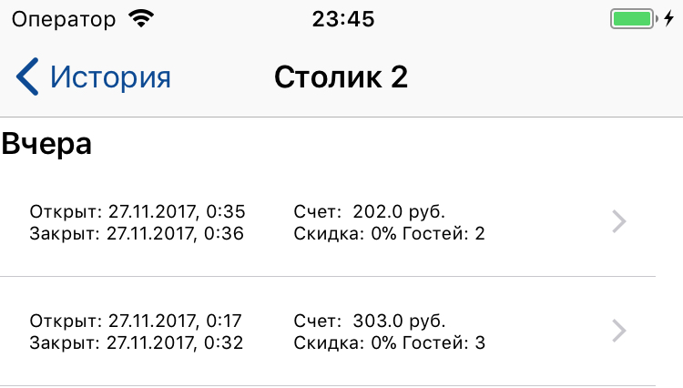
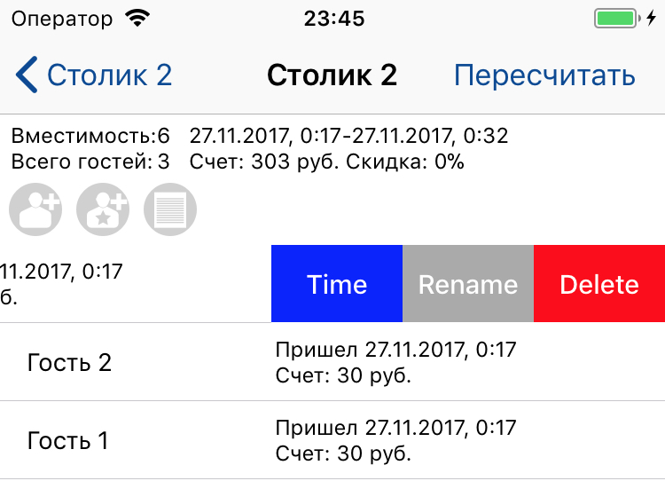

Откройте экран "Отчеты". При открытии экрана, отобразится статистика за текущий день. Так же Вы можете выбрать периоды "Месяц" и "Год". Статистика отображается с 00:00 текущего периода - текущего дня, месяца или года. Так же Вы можете выбрать свой период, нажав на соответствующую кнопку.
Тапнув на ячейку с данными будет открыт график показателей за период. Если выбран период более месяца, Вам будет предложено выбрать шаг для графика.
Нажав на кнопку экспорта, Вы экспортируете текущий отчет в CSV файл. Файл можно отправить по почте, выбрав почтовый клиент, либо сохранив в свои файлы (iOS 11 или новее).
ВНИМАНИЕ! К сожалению не все мессенджеры поддерживают отправку. На данный момент Вы можете отправить файл через Telegram, но не сможете этого сделать через WhatsApp или VK.
ВНИМАНИЕ! Если Вы откроете файл в приложении MS Excel, у Вас могут возникнуть проблемы с кодировкой. Если это случилось, следуйте инструкции:
Для Microsoft Windows:
1) Откройте файл экспорта в Блокноте.
2) Нажмите на Файл-> Сохранить как.
3) При сохранении выберите кодировку ANSI.
4) После этого снова откройте файл в Excel, проблема должна быть решена.
Для Mac OS (вариант 1, работает не во всех версиях Excel):
1) Создайте новый документ в своём Microsoft Excel for Mac
2) Файл - Импорт - CSV файл
3) Формат файла: UTF-8 Unicode -> Далее
4) Поставить галку рядом с разделителем “запятая”, снять с других -> Готово
Для Mac OS (вариант 2, пример для Sublime Text):
1) Скачайте и установите сторонний текстовый редактор, например Sublime Text.
2) Откройте экспортированный файл с помощью Sublime Text.
3) Выберите в меню File -> Save with encoding -> Cyrillic (Windows 1251)
4) Откройте файл с помощью Excel для редактирования, данные должны быть отображены корректно.
Если это не помогло, свяжитесь с нами.
Перейдите на экран История. Выберите необходимый столик. На экране появится история сессий этого столика:

Открыв необходимую сессию, Вам будет представлен стандартный экран столика с историческими данными. Здесь Вы можете:
1. Добавлять гостей. Время прихода и ухода гостя будет автоматически установлено равным времени открытия и закрытия столика.
2. Изменять и удалять гостей, изменять время прихода и ухода каждого гостя. Время будет ограничено временем сессии.

3. Изменять и удалять заказы.
4. Изменять итоговый счет столика, нажав кнопку "Пересчитать". В появившемся окне Вы можете округлить стоимость или применить скидку.